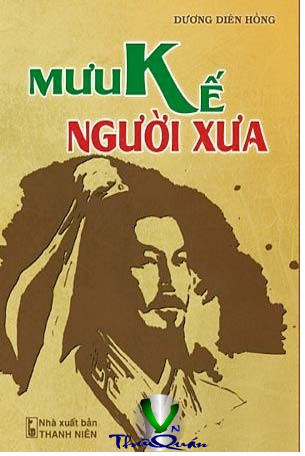

« Back
Mưu Kế Người Xưa
By Dương Diên Hồng

Lời Nói Đầu
THẤT THẬP NHỊ HUYỀN MƯU1. Lùi Để Tiến Tới2. Hành Động Bí Mật 3. Chủ Động Quyền Biến
4. Biết Trước Thời Thế 5. Chiêu Hiền Đãi Sĩ
6. Kích Động Vua Chúa 7. Kiên Tâm Bền Chí
8. Uốn Ba Tấc Lưỡi 9. Thoái Binh Chế Binh
9. Thoái Binh Chế Binh 11. Nhìn Xa Trông Rộng
12. Mưu Thâm Thích Hợp 13. Đột Phá Yếu Điểm
14. Tam Giáo Cửu Lưu 15. Thay Cũ Đổi Mới 16. Xử Lý Linh Hoạt 17. Thiên Địa Vô Thường 18. Nhỏ Mà Thấy Lớn
19. Ứng Địch Hành Động 20. Trói Buộc Chi Phối21. Lấy Tĩnh Chế Động 22. Ẩn Náu Chờ Thời
23. Đổi Vai Chủ Khách 24. Dương Mưu, Âm Mưu 25. Xoay Chuyển Càn Khôn
26. Giành Hết Thiên Cơ 27. Không Màng Danh Lợi
28. Thu Phục Nhân Tâm 29. Tuyệt Đối Bí Mật
30. Sử Dụng Gián Điệp 31. Thủ Trước Công Sau 32. Không Áp Đặt Chủ Quan 33. Quyết Giữ Chính Nghĩa
34. Mâu Thuẫn Thống Nhất 35. Lưu Danh Muôn Thuở 36. Ghi Công Quên Lỗi
37. Bốn Lạng Ngàn Cân 38. Biến Không Thành Có
39. Chủ Quan Hại Mình 40. Một Cây Thành Rừng 41. Kế Sách Lâu Dài
42. Hình Dung Có Địch 43. Học Hỏi Kẻ Thù 44. Nói Mãi Phải Tin
45. Uốn Nắn Sửa Sang 46. Quan Sát Gián Tiếp 47. Thay Thù Thành Bạn 48. Không Đánh Vẫn Thắng 49. Chỉ Dẫn Cho Người
50. Không Lừa Nổi Ai 51. Chúng Bất Địch Quả 52. Họa Phúc Tùy Lời 53. Trăm Phương Ngàn Kế
54. Chiêu Nạp Người Hàng 55. Ứng Biến Thần Tình 56. Đánh Bại Lần Lượt
57. Bổ Dọc Chen Ngang 58. Yếu Thắng Được Mạnh 59. Một Công Đôi Việc 60. Ngàn Vàng Phá Địch
61. Nắm Quyền Bá Chủ 62. Đánh Vào Chỗ Yếu 63. Đại Hiền Vô Địch 64. Tiến Công Nước Người
65. Giữ Thế Cân Bằng 66. Đánh Rắn Đập Đầu67. Dẫn Dụ Đối Phương 68. Lợi Dụng Kẻ Địch
69. Tương Quan Lợi Hại 70. Luồn Sâu Leo Cao 71. Cho Rồi Mới Lấy 72. Hạ Chiếu Cầu Hiền
TAM THẬP LỤC KẾ 1. Dương Đông Kích Tây 2. Điệu Hổ Ly Sơn 3. Nhất Tiễn Song Điêu
4. Minh Tri Cố Muội 5. Dư Long Chuyển Phượng 6. Mỹ Nhân Kế
7. Sấn Hỏa Đả Kiếp 8. Vô Trung Sinh Hữu 9. Tiên Phát Chế Nhân 10. Đả Thảo Kinh Xà
11. Tá Đao Sát Nhân 12. Di Thi Giá Họa 13. Khích Tướng Kế
14. Man Thiên Quá Hải 15. Ám Độ Trần Sương 16. Phản Khách Vi Chủ
17. Kim Thuyền Thoát Xác 18. Không Thành Kế 19. Cầm Tặc Cầm Vương
20. Ban Chư Ngật Hổ 21. Quá Kiều Trừu Bản 22. Liên Hoàn Kế
23. Dĩ Dật Đãi Lao 24. Chỉ Tang Mạ Hòe 25. Lạc Tỉnh Hạ Thạch
26. Hư Trương Thanh Thế 27. Phủ Để Trừu Tân
28. Sát Kê Hách Hầu 29. Phản Gián Kế 30. Lý Đại Đào Cương
31. Thuận Thủ Khiên Dương 32. Dục Cầm Cố Tung
QUỶ CỐC TỬ